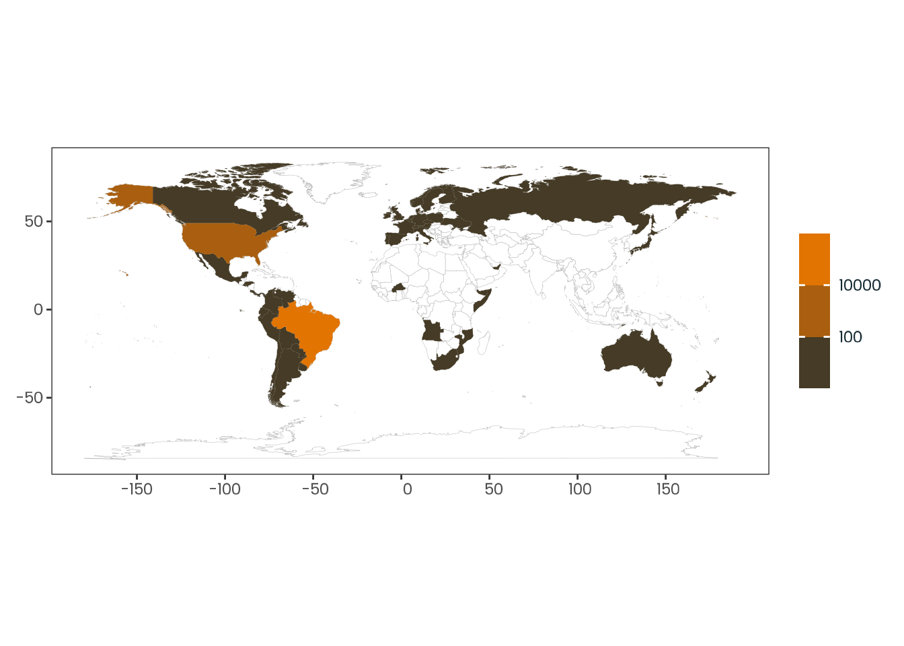
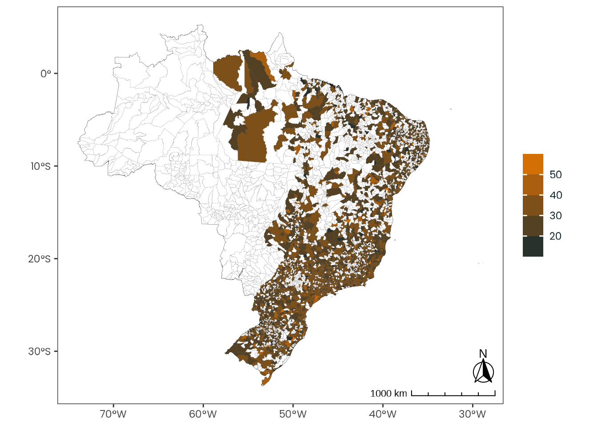
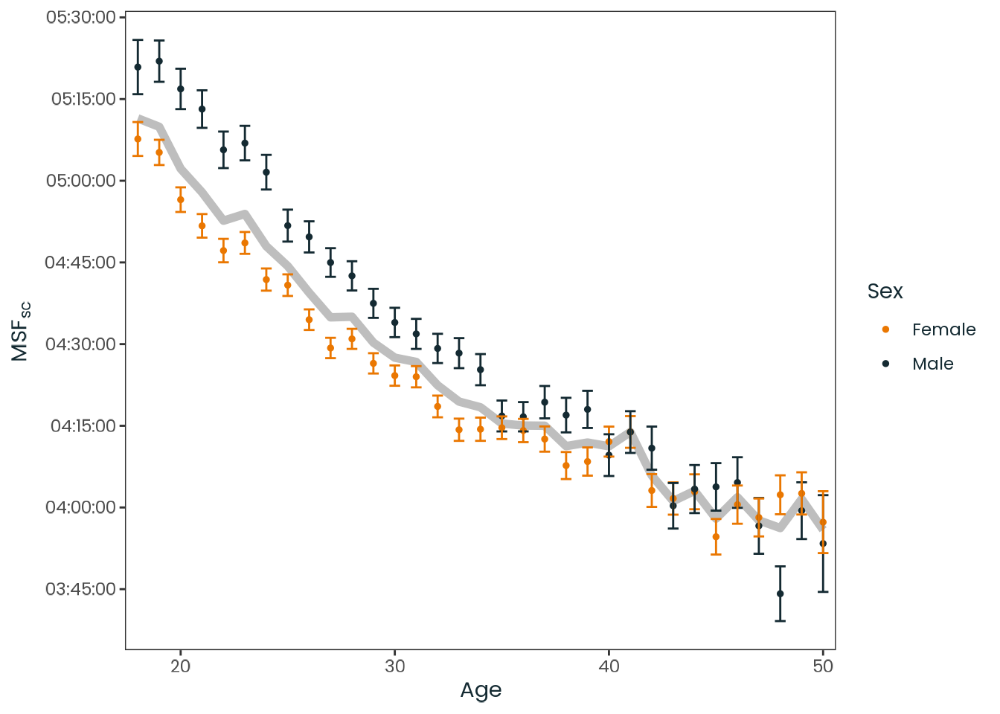

This document focus in providing a comprehensive overview of the data collected in the survey.
It focuses on the sample used on the analysis, with explicit indications provided whenever the full sample is used. The analysis sample is a subset of the full sample, and includes only Brazilian individuals aged 18 or older, residing in the UTC-3 timezone, who completed the survey between October 15th and 21st, 2017.
Please note that the models were created using cell weights to account for sample unbalances. For more information on the sample balance, see the Supplementary Material D.
weighted_data|>plotr:::plot_dist( col ="msf_sc", x_label ="MSF~sc~ (Chronotype proxy) (local time)")
Figure C.1: Histogram of the msf_sc variable with a kernel density estimate, along with a quantile-quantile (Q-Q) plot between the variable and the theoretical quantiles of the normal distribution.
weighted_data|>plotr:::plot_dist( col ="age", x_label ="Age (years)")
Figure C.3: Histogram of the age variable with a kernel density estimate, along with a quantile-quantile (Q-Q) plot between the variable and the theoretical quantiles of the normal distribution.
Source: Created by the authors.
Code
weighted_data|>plotr:::plot_box_plot(col ="age")
Figure C.4: Box plot of the age variable with jittered data points in black.
weighted_data|>plotr:::plot_dist( col ="latitude", x_label ="Latitude (decimal degrees)")
Figure C.5: Histogram of the latitude variable with a kernel density estimate, along with a quantile-quantile (Q-Q) plot between the variable and the theoretical quantiles of the normal distribution.
weighted_data|>plotr:::plot_dist( col ="longitude", x_label ="Longitude (decimal degrees)")
Figure C.7: Histogram of the longitude variable with a kernel density estimate, along with a quantile-quantile (Q-Q) plot between the variable and the theoretical quantiles of the normal distribution.
weighted_data|>plotr:::plot_dist( col ="ghi_month", x_label ="Monthly average global horizontal irradiance (Wh/m²)")
Figure C.9: Histogram of the ghi_month variable with a kernel density estimate, along with a quantile-quantile (Q-Q) plot between the variable and the theoretical quantiles of the normal distribution.
Table C.6: Statistics for the ghi_annual variable.
Source: Created by the authors.
Code
weighted_data|>plotr:::plot_dist( col ="ghi_annual", x_label ="Annual average global horizontal irradiance (Wh/m²)")
Figure C.11: Histogram of the ghi_annual variable with a kernel density estimate, along with a quantile-quantile (Q-Q) plot between the variable and the theoretical quantiles of the normal distribution.
Table C.7: Statistics for the march_equinox_sunrise variable.
Source: Created by the authors.
Code
weighted_data|>plotr:::plot_dist( col ="march_equinox_sunrise", x_label ="Sunrise on the March equinox (date-time seconds)")
Figure C.13: Histogram of the march_equinox_sunrise variable with a kernel density estimate, along with a quantile-quantile (Q-Q) plot between the variable and the theoretical quantiles of the normal distribution.
Table C.8: Statistics for the march_equinox_sunset variable.
Source: Created by the authors.
Code
weighted_data|>plotr:::plot_dist( col ="march_equinox_sunset", x_label ="Sunset on the March equinox (seconds)")
Figure C.15: Histogram of the march_equinox_sunset variable with a kernel density estimate, along with a quantile-quantile (Q-Q) plot between the variable and the theoretical quantiles of the normal distribution.
Table C.9: Statistics for the march_equinox_daylight variable.
Source: Created by the authors.
Code
weighted_data|>plotr:::plot_dist( col ="march_equinox_daylight", x_label ="Daylight on the March equinox (seconds)")
Figure C.17: Histogram of the march_equinox_daylight variable with a kernel density estimate, along with a quantile-quantile (Q-Q) plot between the variable and the theoretical quantiles of the normal distribution.
Table C.10: Statistics for the june_solstice_sunrise variable.
Source: Created by the authors.
Code
weighted_data|>plotr:::plot_dist( col ="june_solstice_sunrise", x_label ="Sunrise on the June solstice (seconds)")
Figure C.19: Histogram of the june_solstice_sunrise variable with a kernel density estimate, along with a quantile-quantile (Q-Q) plot between the variable and the theoretical quantiles of the normal distribution.
Table C.11: Statistics for the june_solstice_sunset variable.
Source: Created by the authors.
Code
weighted_data|>plotr:::plot_dist( col ="june_solstice_sunset", x_label ="Sunset on the June solstice (seconds)")
Figure C.21: Histogram of the june_solstice_sunset variable with a kernel density estimate, along with a quantile-quantile (Q-Q) plot between the variable and the theoretical quantiles of the normal distribution.
Table C.12: Statistics for the june_solstice_daylight variable.
Source: Created by the authors.
Code
weighted_data|>plotr:::plot_dist( col ="june_solstice_daylight", x_label ="Daylight on the June solstice (seconds)")
Figure C.23: Histogram of the june_solstice_daylight variable with a kernel density estimate, along with a quantile-quantile (Q-Q) plot between the variable and the theoretical quantiles of the normal distribution.
Table C.13: Statistics for the september_equinox_sunrise variable.
Source: Created by the authors.
Code
weighted_data|>plotr:::plot_dist( col ="september_equinox_sunrise", x_label ="Sunrise on the September solstice (seconds)")
Figure C.25: Histogram of the september_equinox_sunrise variable with a kernel density estimate, along with a quantile-quantile (Q-Q) plot between the variable and the theoretical quantiles of the normal distribution.
Table C.14: Statistics for the september_equinox_sunset variable.
Source: Created by the authors.
Code
weighted_data|>plotr:::plot_dist( col ="september_equinox_sunset", x_label ="Sunset on the September solstice (seconds)")
Figure C.27: Histogram of the september_equinox_sunset variable with a kernel density estimate, along with a quantile-quantile (Q-Q) plot between the variable and the theoretical quantiles of the normal distribution.
Table C.15: Statistics for the september_equinox_daylight variable.
Source: Created by the authors.
Code
weighted_data|>plotr:::plot_dist( col ="september_equinox_daylight", x_label ="Daylight on the September solstice (seconds)")
Figure C.29: Histogram of the september_equinox_daylight variable with a kernel density estimate, along with a quantile-quantile (Q-Q) plot between the variable and the theoretical quantiles of the normal distribution.
Table C.16: Statistics for the december_solstice_sunrise variable.
Source: Created by the authors.
Code
weighted_data|>plotr:::plot_dist( col ="december_solstice_sunrise", x_label ="Sunrise on the December solstice (seconds)")
Figure C.31: Histogram of the december_solstice_sunrise variable with a kernel density estimate, along with a quantile-quantile (Q-Q) plot between the variable and the theoretical quantiles of the normal distribution.
Table C.17: Statistics for the december_solstice_sunset variable.
Source: Created by the authors.
Code
weighted_data|>plotr:::plot_dist( col ="december_solstice_sunset", x_label ="Sunset on the December solstice (seconds)")
Figure C.33: Histogram of the december_solstice_sunset variable with a kernel density estimate, along with a quantile-quantile (Q-Q) plot between the variable and the theoretical quantiles of the normal distribution.
Table C.18: Statistics for the december_solstice_daylight variable.
Source: Created by the authors.
Code
weighted_data|>plotr:::plot_dist( col ="december_solstice_daylight", x_label ="Daylight on the December solstice (seconds)")
Figure C.35: Histogram of the december_solstice_daylight variable with a kernel density estimate, along with a quantile-quantile (Q-Q) plot between the variable and the theoretical quantiles of the normal distribution.
Table C.21: Latitude and longitude statistics of respondents (Analysis sample).
Source: Created by the author.
C.7 Population distributions
For numerical comparisons, refer to Supplementary Material D.
C.7.1 Brazil
Brazilian Institute of Geography and Statistics’s (IBGE) population estimates of the population distribution is used in the same timeframe of the sample (2017) (Instituto Brasileiro de Geografia e Estatística, n.d.). The data can be accessed at the IBGE’s SIDRA platform (IBGE’s Table 6579).
IBGE’s Table 6579 was used instead of Table 6407 because the later does not have the same level of detail for the municipalities.
Code
ibge_6579_data_state<-sidrar::get_sidra(api ="/t/6579/n3/all/v/all/p/2017")|>rutils::shush()|>dplyr::as_tibble()|>janitor::clean_names()|>dplyr::select(unidade_da_federacao_codigo, valor)|>dplyr::rename( state_code =unidade_da_federacao_codigo, n =valor)|>dplyr::mutate(state_code =as.integer(state_code))|>dplyr::relocate(state_code, n)
Code
plot_6579_ibge_1<-ibge_6579_data_state|>plotr:::plot_brazil_state( col_fill ="n", year =2017, transform ="log10", direction =-1, scale_type ="binned")
Code
ibge_6579_data_municipality<-sidrar::get_sidra(api ="/t/6579/n6/all/v/all/p/2017")|>rutils::shush()|>dplyr::as_tibble()|>janitor::clean_names()|>dplyr::select(municipio_codigo, valor)|>dplyr::rename( municipality_code =municipio_codigo, n =valor)|>dplyr::mutate(municipality_code =as.integer(municipality_code))|>dplyr::relocate(municipality_code, n)
Code
max_limit<-ibge_6579_data_municipality|>dplyr::pull(n)|>rutils:::inverse_log_max(10)plot_6579_ibge_2<-ibge_6579_data_municipality|>plotr:::plot_brazil_municipality( col_fill ="n", year =2017, transform ="log10", direction =-1, breaks =10^(seq(1, log10(max_limit)-1)), reverse =FALSE)
Code
plot_6579_ibge_3<-ibge_6579_data_municipality|>plotr:::plot_brazil_municipality( col_fill ="n", year =2017, transform ="log10", direction =-1, alpha =0.75, breaks =c(100000, 500000, 1000000, 5000000, 10000000, 12000000), point =TRUE)
plot_full_1<-anonymized_data|>plotr:::plot_world_countries( transform ="log10", direction =-1, scale_type ="binned")

Code
plot_full_2<-anonymized_data|>plotr:::plot_brazil_state( year =2017, transform ="log10", direction =-1, scale_type ="binned")
Code
max_limit<-anonymized_data|>dplyr::filter(country=="Brazil")|>dplyr::count(municipality_code)|>dplyr::pull(n)|>rutils:::inverse_log_max(10)plot_full_3<-anonymized_data|>plotr:::plot_brazil_municipality( year =2017, transform ="log10", direction =-1, breaks =10^(seq(1, log10(max_limit)-1)))
Code
max_limit<-anonymized_data|>dplyr::filter(country=="Brazil")|>dplyr::count(municipality_code)|>dplyr::pull(n)|>max()plot_full_4<-anonymized_data|>plotr:::plot_brazil_municipality( year =2017, transform ="log10", direction =-1, alpha =0.75, breaks =c(10, 500, 1000, 5000, 10000, 12000), point =TRUE, reverse =TRUE)
Code
plot_full_5<-anonymized_data|>plotr:::plot_brazil_point( year =2017, scale_type ="discrete")
plot_analysis_1<-weighted_data|>plotr:::plot_brazil_state( year =2017, transform ="log10", direction =-1, scale_type ="binned")
Code
max_limit<-weighted_data|>dplyr::filter(country=="Brazil")|>dplyr::count(municipality_code)|>dplyr::pull(n)|>rutils:::inverse_log_max(10)plot_analysis_2<-weighted_data|>plotr:::plot_brazil_municipality( year =2017, transform ="log10", direction =-1, breaks =10^(seq(1, log10(max_limit))))
Code
plot_analysis_3<-weighted_data|>plotr:::plot_brazil_municipality( year =2017, transform ="log10", direction =-1, alpha =0.75, breaks =c(10, 500, 1000, 5000, 7500), point =TRUE, reverse =TRUE)
Code
plot_analysis_4<-weighted_data|>plotr:::plot_brazil_point( year =2017, scale_type ="discrete")
prettycheck:::assert_internet()ibge_6407_data<-sidrar::get_sidra( api =paste0("/t/6407/n3/all/v/606/p/2017/c2/allxt/c58/1140,1141,1144,1145,1152,","2793,3299,3300,3301,3350,6798,40291,118282"))|>dplyr::as_tibble()|>janitor::clean_names()|>dplyr::select(valor, unidade_da_federacao_codigo, unidade_da_federacao, ano, sexo,grupo_de_idade)|>dplyr::rename( n =valor, state_code =unidade_da_federacao_codigo, state =unidade_da_federacao, year =ano, sex =sexo, age_group =grupo_de_idade)|>dplyr::arrange(state, sex, age_group)|>dplyr::mutate( year =as.integer(year), country ="Brazil", region =orbis::get_brazil_region(state), state_code =as.integer(state_code), sex =dplyr::case_match(sex,"Homens"~"Male","Mulheres"~"Female"), sex =factor(sex, ordered =FALSE), age_group =dplyr::case_match(age_group,"0 a 4 anos"~"0-4","5 a 9 anos"~"5-9","10 a 13 anos"~"10-13","14 a 15 anos"~"14-15","16 a 17 anos"~"16-17","18 a 19 anos"~"18-19","20 a 24 anos"~"20-24","25 a 29 anos"~"25-29","30 a 39 anos"~"30-39","40 a 49 anos"~"40-49","50 a 59 anos"~"50-59","60 a 64 anos"~"60-64","65 anos ou mais"~"65+"), age_group =factor(age_group, ordered =TRUE), age_group_midpoint =dplyr::case_when(age_group=="0-4"~2,age_group=="5-9"~7,age_group=="10-13"~11.5,age_group=="14-15"~14.5,age_group=="16-17"~16.5,age_group=="18-19"~18.5,age_group=="20-24"~22,age_group=="25-29"~27,age_group=="30-39"~34.5,age_group=="40-49"~44.5,age_group=="50-59"~54.5,age_group=="60-64"~62,age_group=="65+"~65+62-54.5# 65 + 62 - 54.5), n =as.integer(n*1000))|>dplyr::relocate(year, country, region, state_code, state, sex, age_group,age_group_midpoint, n)ibge_6407_data
The statistics shown is this section are estimations based on the age group midpoints, hence, it must be interpreted with caution. \(n\) is presented in thousands of people.
Figure C.39: Relation between age and weight (kg), divided by sex and aggregated by the mean. The gray line represents both sex. Vertical lines represent the standard error of the mean (SEM).
[Source: Created by the author, based on a data visualization from Roenneberg et al. (2007, Figure 4).{.legend}
plot_analysis_age_2<-anonymized_data|>plotr:::plot_brazil_state( col_fill ="age", # Means year =2017, direction =-1, quiet =TRUE, scale_type ="binned")

Code
plot_analysis_age_3<-weighted_data|>plotr:::plot_brazil_municipality( col_fill ="age", # Means year =2017, direction =-1, quiet =TRUE)
C.9 Weight Distributions
C.9.1 Full Sample
Code
weighted_data|>dplyr::filter(!rutils::test_outlier(weight))|>plotr:::plot_latitude_series( col ="weight", y_label ="Weight (kg)")
Figure C.40: Boxplots of mean weight values (kg) aggregated by 1° latitude intervals, illustrating the relationship between latitude and weight. The × symbol points to the mean. The orange line represents a linear regression.
Figure C.41: Observed relation between age and chronotype, divided by sex and aggregated by the mean. Chronotype is represented by the local time of the sleep corrected midpoint between sleep onset and sleep end on work-free days (MSFsc), MCTQ proxy for measuring the chronotype. The gray line represents both sex. Vertical lines represent the standard error of the mean (SEM).
Source: Created by the author based on a data visualization from Roenneberg et al. (2007, Figure 4).
Figure C.42: Distribution of European chronotypes by age, as shown in Roenneberg et al. (2007), for comparison.
Source: Reproduced from Roenneberg et al. (2007, Figure 4).
Figure C.43: Observed distribution of the local time of the sleep-corrected midpoint between sleep onset and sleep end on work-free days (MSFsc), a proxy for chronotype. Chronotypes are categorized into quantiles, ranging from extremely early (\(0 |- 0.11\)) to extremely late (\(0.88 - 1\)).
[Source: Created by the author based on a data visualization from Roenneberg et al. (2019, Figure 1).{.legend}
Figure C.44: Distribution of European chronotypes, as shown in Roenneberg et al. (2019) (for comparison).
Figure C.45: Observed relation between age and chronotype, divided by sex and aggregated by the mean (Analysis sample). Chronotype is represented by the local time of the sleep corrected midpoint between sleep onset and sleep end on work-free days (MSFsc), MCTQ proxy for measuring the chronotype. The gray line represents both sex. Vertical lines represent the standard error of the mean (SEM).

Source: Created by the author based on a data visualization from Roenneberg et al. (2007, Figure 4).
Figure C.46: Observed geographical distribution of MSFsc values by a spectrum of extremely early and extremely late, illustrating how chronotype varies with latitude in Brazil. MSFsc is a proxy for chronotype, representing the midpoint of sleep on work-free days, adjusted for sleep debt. Chronotypes are categorized into quantiles, ranging from extremely early (\(0 |- 0.11\)) to extremely late (\(0.88 - 1\)). No discernible pattern emerges from the distribution of chronotypes across latitudes.
Source: Created by the author.
Code
weighted_data|>plotr:::plot_latitude_series()
Figure C.47: Boxplots of observed mean MSFsc values aggregated by 1° latitude intervals, illustrating the relationship between latitude and chronotype. MSFsc represents the local time of the sleep-corrected midpoint between sleep onset and sleep end on work-free days, a proxy for chronotype. Higher MSFsc values indicate later chronotypes. The × symbol points to the mean. The orange line represents a linear regression. The differences in mean/median values across latitudes are minimal relative to the Munich ChronoType Questionnaire (MCTQ) scale.
Instituto Brasileiro de Geografia e Estatística. (n.d.). Tabela 6579: População residente estimada [Data set]. SIDRA. Retrieved November 16, 2023, from https://sidra.ibge.gov.br/Tabela/3939
Roenneberg, T., Kuehnle, T., Juda, M., Kantermann, T., Allebrandt, K., Gordijn, M., & Merrow, M. (2007). Epidemiology of the human circadian clock. Sleep Medicine Reviews, 11(6), 429–438. https://doi.org/10.1016/j.smrv.2007.07.005
Roenneberg, T., Wirz-Justice, A., Skene, D. J., Ancoli-Israel, S., Wright, K. P., Dijk, D.-J., Zee, P., Gorman, M. R., Winnebeck, E. C., & Klerman, E. B. (2019). Why should we abolish daylight saving time? Journal of Biological Rhythms, 34(3), 227–230. https://doi.org/10.1177/0748730419854197


 {width: 80%}
{width: 80%}